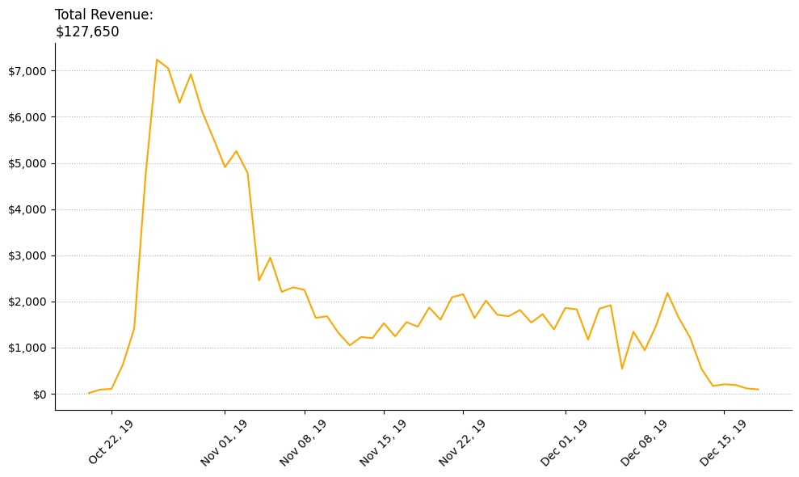
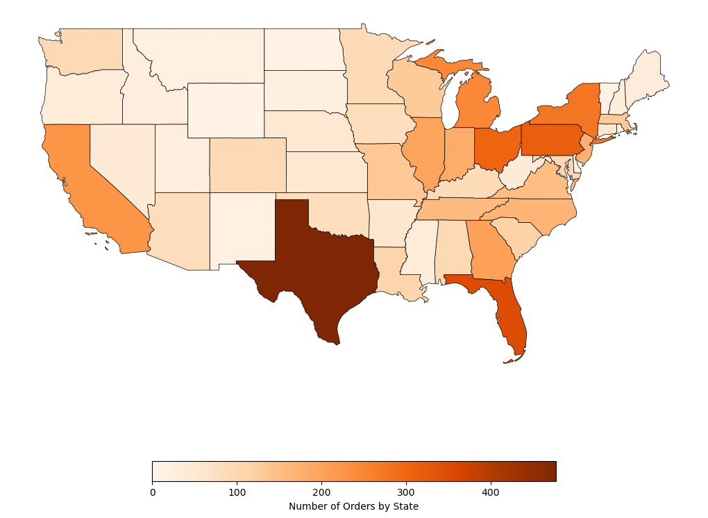
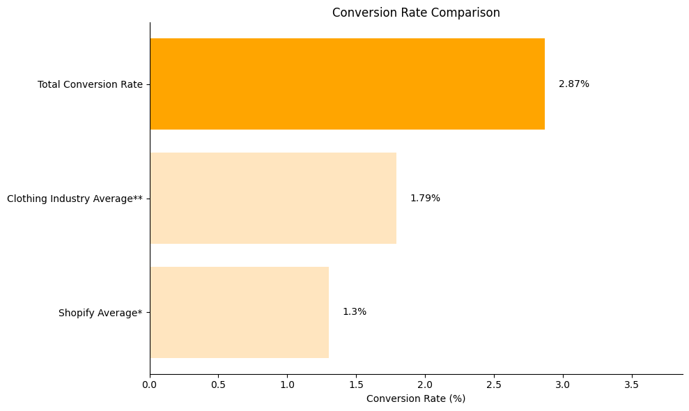
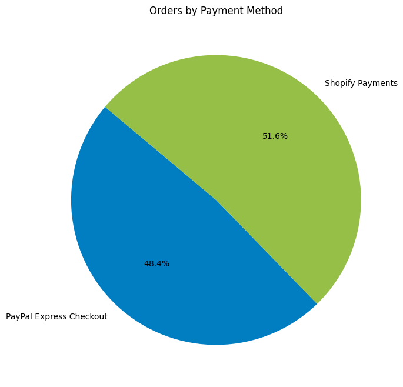

Overview
In this project, I revisited data from "Xmas Everything," an e-commerce store I previously owned and operated. While running the business, I relied primarily on basic analytics tools provided by platforms like Shopify to make decisions. Now, with a more sophisticated data science toolkit, I've reanalyzed this historical data to extract deeper insights and demonstrate how my analytical capabilities have evolved.
The analysis focuses on four key business metrics: revenue trends over time, geographical distribution of orders, conversion rates against industry benchmarks, and payment method distribution.
This project was both nostalgic and revelatory. Looking back at the data from my e-commerce venture with new skills and perspectives allowed me to see missed opportunities and validate some of the intuitive decisions I made at the time. It was a powerful demonstration of how my analytical skills have grown over the years and reminded me of the real-world impact data science can have on business outcomes.
Revenue analysis
I loaded order data from a Shopify export, converted the 'Paid at' column to datetime, filtered out unpaid orders, and aggregated total revenue by date to visualize sales trends over time.
df_orders = pd.read_csv('orders_export_1.csv')
df_orders['Paid at'] = pd.to_datetime(df_orders['Paid at'])
df_orders = df_orders.dropna(subset=['Paid at'])
total_revenue = df_orders.groupby(df_orders['Paid at'].dt.date)['Total'].sum()
Total revenue over time — note the significant increase followed by a decline.
- Revenue showed a clear upward trend initially, indicating successful marketing and product-market fit
- The sudden decline coincided with PayPal freezing the store's assets, which significantly impacted operations
- Total revenue during this period was substantial, demonstrating the business's potential
Geographical analysis
With distribution centers in New Jersey and San Francisco, understanding where orders came from mattered. I combined order data with US Census Bureau shapefiles using GeoPandas, filtered to the continental US, and mapped order intensity by state.
orders_by_state = df_orders['Shipping Province Name'].value_counts()
gdf_states = gpd.read_file('cb_2018_us_state_20m.shp')
gdf_merged = gdf_states.merge(orders_by_state, left_on='NAME',
right_on='State', how='left')
Order distribution across the continental United States.
- Order concentration was significantly higher on the East Coast — explaining why the New Jersey inventory depleted faster
- California showed strong order volume despite being on the opposite coast from most customers
- Several Midwestern states had surprisingly low volumes, suggesting untapped markets
Conversion rate analysis
How effectively did the store turn visitors into customers? I calculated the total conversion rate from traffic data and benchmarked it against Littledata's survey of 3,000+ Shopify stores and IPR Commerce's clothing-industry data.
df_traffic = pd.read_csv('visits_2019-10-01_2019-12-31.csv')
total_conversion_rate = round((df_traffic['total_orders_placed'].sum() /
df_traffic['total_sessions'].sum()) * 100, 2)
Conversion rate vs. industry benchmarks.
- Xmas Everything outperformed both the general Shopify average and the clothing-industry average
- This suggests effective targeting, compelling products, or a well-designed customer journey
- Traffic quality was high, even if overall volume could be improved
Payment methods analysis
The final analysis examined how customers paid — particularly relevant given the impact of PayPal's asset freeze on operations.
payment_methods = df_orders['Payment Method'].value_counts()[
['PayPal Express Checkout', 'Shopify Payments']]
Distribution of orders by payment method.
- PayPal processed a significant portion of orders — explaining the substantial impact when those funds were frozen
- Multiple payment processors meant both risk (vulnerability to freezes) and benefit (diversification)
- Key lesson: healthy relationships with payment processors are critical for e-commerce operations
Business impact & lessons learned
Inventory optimization
The geographical analysis explained why the New Jersey warehouse depleted faster than San Francisco. A more optimal split would have allocated roughly 70% to the East Coast facility and 30% to the West.
Payment resilience
Heavy reliance on PayPal created a single point of failure that significantly impacted operations when funds were frozen. A contingency plan for payment processing would have been valuable.
Marketing effectiveness
Above-average conversion confirmed that marketing was targeting the right audience and the site was successfully converting interest into sales.
Revenue patterns
Time-series patterns could have informed marketing spend timing and inventory preparation for future seasons.
Then vs. now
This reanalysis is more than a technical exercise — it shows how enhanced analytical capability translates directly to business value.
- Relied on platform-provided dashboards
- Limited to predefined metrics
- Minimal geographical insights
- No comparative benchmarking
- Reactive decision-making
- Custom Python scripts for targeted analysis
- Data cleaning and transformation skills
- Geographic visualization with GeoPandas
- Industry benchmarking and contextualization
- Proactive, data-driven recommendations
Future work
If continuing this analysis, several avenues would provide valuable insights:
- Customer segmentation — clustering techniques to identify customer groups and purchasing behaviors
- Product association analysis — market basket analysis to discover frequently co-purchased items
- Predictive modeling — forecasting seasonal demand to optimize inventory levels
- Customer lifetime value — understanding the long-term value of customer acquisition
- Marketing channel attribution — multi-touch attribution to find the most valuable channels